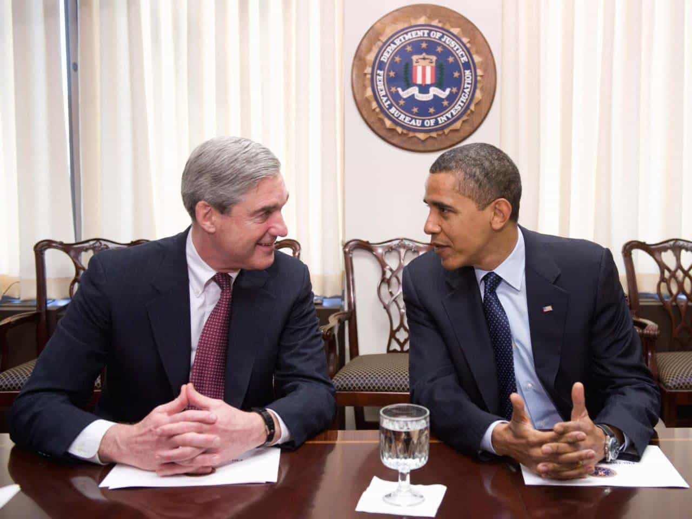
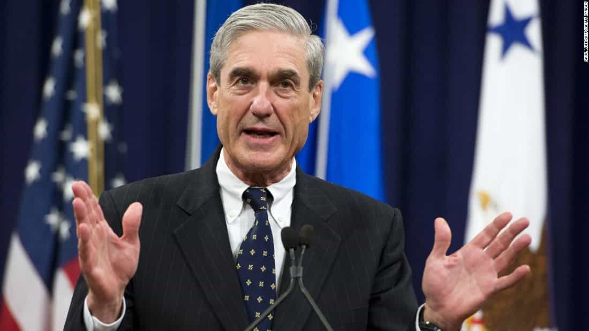

This account syndicates news from other media outlets.


Paul Manafort, a former campaign manager for President Donald Trump, and his onetime business partner became the first people charged in the broad investigation into Russian meddling with the U.S. election.
The charges against Manafort and Rick Gates indicate that Special Counsel Robert Mueller’s probe is intensifying and could pose a danger to the White House. Investigators are likely to pressure the pair to cooperate with prosecutors in a bid for leniency and to disclose everything that they know about Trump’s campaign.
Manafort and Gates face money laundering, conspiracy and tax charges in a 12-count indictment.

Trump has repeatedly dismissed the probe as “the single greatest witch hunt in American political history.” The White House appeared rattled over the weekend, and on Sunday administration officials were uncertain who would be arrested, with the president tweeting that investigators should focus instead on Hillary Clinton and the Democratic Party.
Early Monday, prosecutors told Manafort and Gates to surrender. Mueller’s demand caught both men by surprise, with their allies confident that they were safe for now.
Manafort, wearing a suit and tie, drove past a crowd of photographers and cameramen in a black SUV as he left his Alexandria, Virginia, home around 8 a.m., according to photos and videos posted on Twitter. Gates lives in Richmond, Virginia.
The federal charges put the prospect of a presidential pardon front and center, a potential wild card for Mueller’s investigation. Trump has said on Twitter that the president has “complete power” to pardon. But doing so could deepen the legal trouble of those in Trump’s circle because prosecutors could then try to compel pardoned individuals to testify since they lose some Fifth Amendment protections.
Manafort is also under investigation by authorities in New York state, where the president wouldn’t have authority to issue a pardon.
Trump’s reaction to the charges — which could also include messages to witnesses to stay quiet — should be watched carefully, former U.S. attorney Preet Bharara said on CNN’s “State of the Union.”
Manafort, 68, has been under investigation by Mueller for months for work before he joined the Trump campaign. A top Republican strategist who also worked extensively for foreign politicians, he left the presidential campaign after only a few months in 2016 when information surfaced about his earlier work in Ukraine for a pro-Russian party, which intensified scrutiny of his past business dealings.

Gates worked with Manafort on Trump’s campaign and political campaigns in Ukraine. After Manafort left the campaign, he stayed on and later joined the president-elect’s inaugural committee. He was said to be working with Thomas Barrack, a wealthy Los Angeles investor and Trump confidant, and the two often visited the White House together.
The charges were filed in federal court in Washington. Calls to representatives for the two men weren’t immediately returned.
Manafort joined Trump’s campaign in March 2016 and managed it from June to August, when he resigned amid questions about his work for pro-Russian politicians in Ukraine. He has said he knows nothing of Russian interference. Mueller is also investigating possible obstruction of justice by Trump and other crimes by his associates.
Mueller’s office was especially aggressive in its pursuit of Manafort, scrutinizing whether he laundered money from Eastern Europe into New York properties, complied with the Foreign Agents Registration Act, and paid taxes on international clients he advised, particularly in Ukraine.
Don’t Miss: The Deep State Now Has The Upper Hand Against Donald Trump